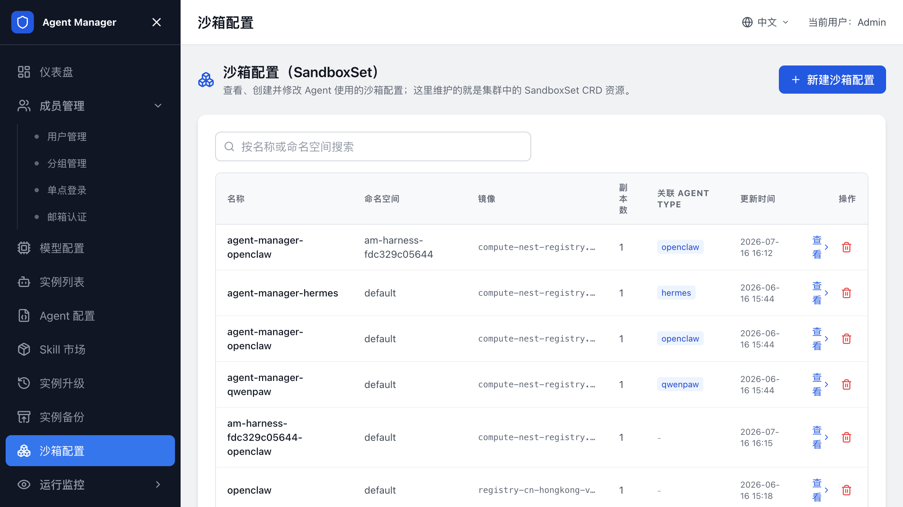
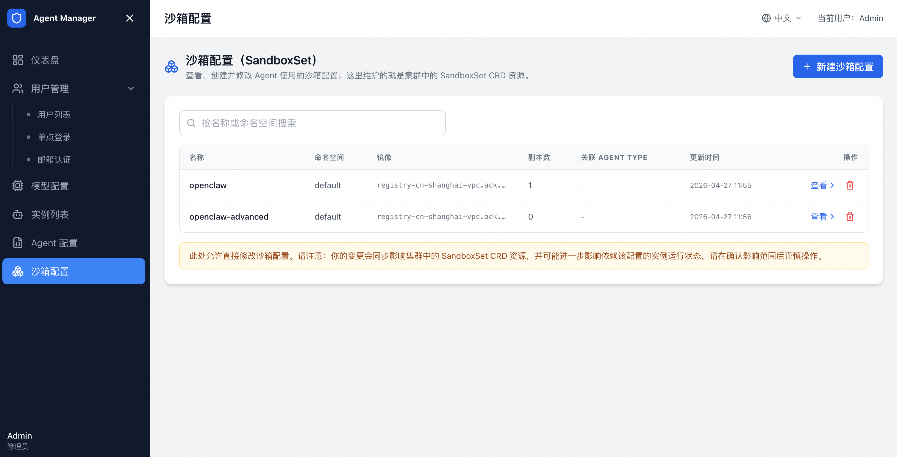

配置沙箱（SandboxSet）¶
在 沙箱配置 中管理 Agent 实例的运行环境，包括 SandboxSet、沙箱镜像、资源规格、命名空间和网络策略。SandboxSet 是创建 Agent 实例时使用的沙箱模板。

SandboxSet¶
每个 SandboxSet 对应一类沙箱模板，决定实例使用的镜像、资源规格、副本数、端口、挂载卷和其他运行参数。
通过计算巢部署的新环境会为内置 Agent 类型创建对应 SandboxSet，例如 agent-manager-openclaw 和 agent-manager-hermes。
不同版本可能包含更多内置模板，以管理后台实际展示为准。
查看 SandboxSet¶
- 登录管理后台。
- 打开
沙箱配置。 - 查看当前集群中的 SandboxSet 列表。
- 单击查看进入详情页。
列表展示名称、命名空间、副本数、状态和操作入口。详情页提供 YAML 编辑器，用于查看和修改 SandboxSet 资源。

新建 SandboxSet¶
新增自定义 Agent 类型前，先准备对应 SandboxSet。
- 打开
沙箱配置。 - 单击新建沙箱配置。
- 填写名称，例如
agent-manager-<code>。 - 粘贴 SandboxSet YAML。
- 保存。
- 在 Agent 类型中关联该 SandboxSet。
保存后，先创建测试 Agent 类型和测试实例，确认沙箱能正常启动、写入配置、访问模型网关和进入 Agent 工作台。
修改 SandboxSet¶
修改 SandboxSet 后，新建或重建的沙箱会使用新配置。已运行实例通常不会自动应用新配置。
- 打开 SandboxSet 详情页。
- 在 YAML 编辑器中修改镜像、资源、环境变量或挂载配置。
- 保存配置。
- 停止并重新启动相关实例，或通过 Agent 升级 发起沙箱升级。
- 创建或打开测试实例验证。
修改环境变量、镜像或挂载后，同步检查对应 Agent 类型的配置模板、启动命令和备份恢复命令。
沙箱镜像规范¶
自定义沙箱镜像需要满足以下要求：
| 要求 | 说明 |
|---|---|
| 基于可维护的 Agent 运行时镜像 | 避免从极简镜像开始构建。 |
| 内置进程管理 | 使用 supervisor、脚本或等效方式保证 Agent 进程可启动和重启。 |
| 提供健康检查端口 | 便于 SandboxSet 和平台判断实例状态。 |
| 固定配置文件路径 | 与 Agent 类型中的配置写入路径一致。 |
| 使用明确的运行用户 | 与 Agent 类型中的沙箱用户一致。 |
| 不在镜像中写死密钥 | 密钥通过模板变量写入。 |
修改镜像后，先用测试 Agent 类型和测试实例验证，再开放给用户。
备份恢复能力要求¶
如果要对已运行 Agent 实例执行备份或升级，SandboxSet 必须支持 /backup 挂载；要执行沙箱升级，还需要配置升级生命周期命令。
确认以下条件：
- SandboxSet 中存在
agent-runtimeruntime。 - SandboxSet 中存在
csiruntime。 - 新建实例时已写入备份挂载信息。
- Agent 类型已配置升级前备份命令和升级后恢复命令。
旧实例如果创建时没有备份挂载信息，后续修复 SandboxSet 也不会自动补齐。重建实例，或由管理员手动补齐挂载能力后再升级。
在自定义 namespace 部署沙箱¶
把沙箱部署到非默认 namespace 前，确认 Agent Manager 后端 ServiceAccount 对目标 namespace 有访问 SandboxSet 和 Pod 的权限。
处理步骤：
- 创建目标 namespace。
- 在 SandboxSet YAML 中修改
metadata.namespace。 - 替换安全组、交换机和镜像参数。
- 提交 SandboxSet。
- 在 Agent 类型中选择该 SandboxSet。
- 创建测试实例验证。
如果目标 namespace 没有对应 RBAC 权限，实例创建、沙箱列表和 Agent 备份升级都可能失败。
GlobalTrafficPolicy 网络策略¶
集群启用 GlobalTrafficPolicy 时，资源会通过 spec.selector.matchLabels 选中 Pod 并应用网络隔离规则。确认 selector 能匹配 Agent Pod 的 label；新增 Agent 类型或修改 SandboxSet 标签后，需要重新检查。
当新增工作负载或修改 SandboxSet label 后，需要检查：
kubectl edit globaltrafficpolicy openclaw-global-policy
如果策略 selector 未命中目标 Pod，网络隔离规则不会对新 Agent Pod 生效。
例如，策略需要匹配 OpenClaw Pod 时：
spec:
selector:
matchLabels:
app: agent-manager-openclaw
相同网络规则可以扩展现有策略的 selector；不同网络规则应新建独立的 GlobalTrafficPolicy。修改后验证 Agent Manager 和 Sandbox 之间的必要链路仍然可达。
完整概念和配置方式请参考阿里云 TrafficPolicy 文档。